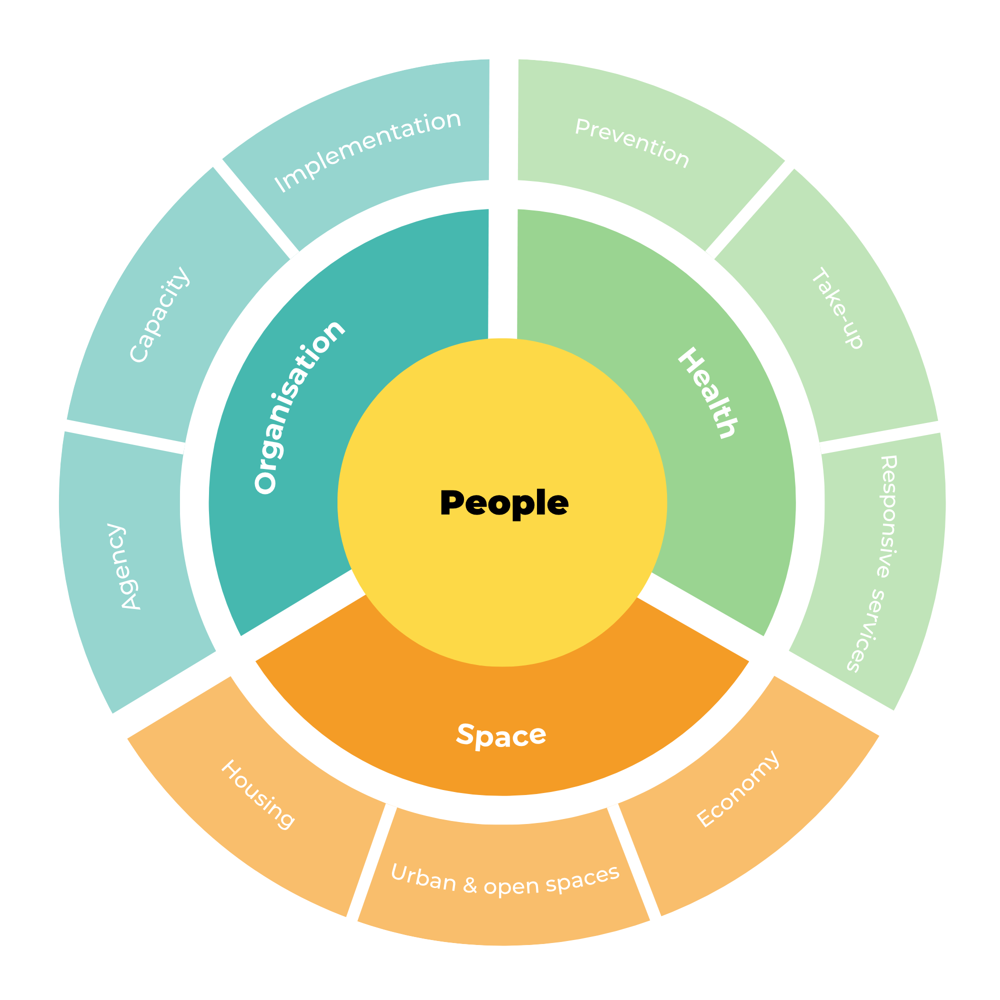

Selected work
All projects →Footwork
Research-led service design within real client constraints, applying design thinking and iterative delivery to produce strategic service improvements.

Communities for Health
Building health services around the people who need them most. Participatory design centred on community agency and strategic co-production.

3 Years of Listening: PhD as User Research
A longitudinal ethnographic study applying rigorous qualitative methods at scale. What three years of immersive fieldwork teaches you about designing with communities.

A Seat at the Stronger Things Table
Peer-led workshop facilitation for 17 community innovators and local authority leaders at London's Guildhall.

Our Herd
Community-centred design for shared wellbeing.

Creative Host
Creative practice as a vehicle for community connection.

Camden Shares
Redesigning trust between help providers and families through ethnographic research and co-designed reflective practice tools.